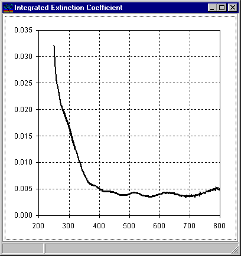

Integrated Extinction Coefficient
This option allows for the estimation of the integrated extinction coefficient. This characteristic takes into account all losses in the thin film layer - substrate system, including scattering losses and losses associated with the excitation of waveguide modes in the thin film (if propagating modes exist). The conventional extinction coefficient is a component of the integrated extinction coefficient. More detailed information can be found in the document Advanced Thin-Film Optical Coatings: Characterization provided by OptiLayer Ltd.

To execute the Integrated Extinction command, both reflectance and transmittance for the same incident angle must be loaded into memory. Additionally, it is required that the layer refractive index has already been determined using the options in the Characterization menu.